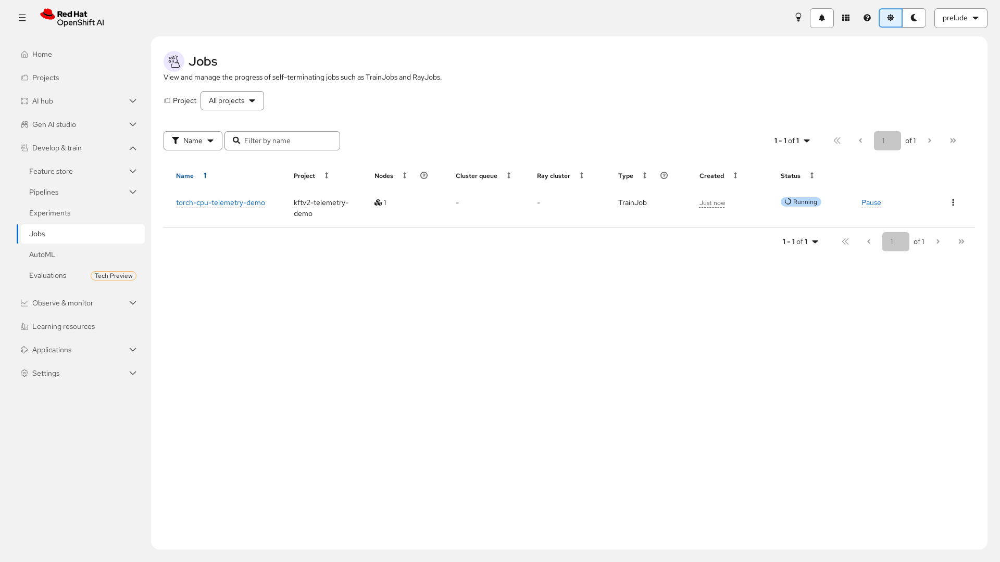
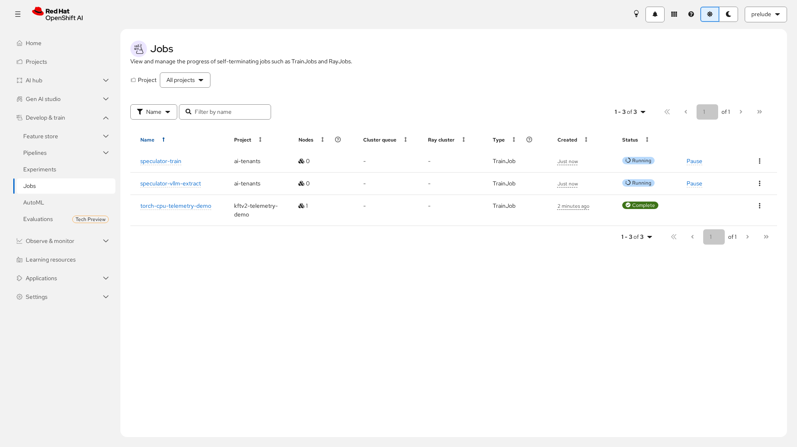
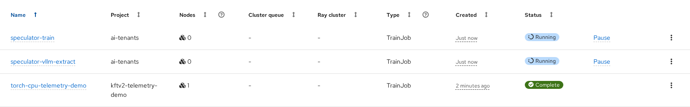

Module 02: Hands-on — the Mode 4 demo flow
In this module you drive the kitchensink Mode 4 demo flow end to end for the RHAISTRAT-2550 feature: one step per section, each with concrete commands and the evidence capture expected at that step. Mode 4 is the workshop factory’s locked recipe for producing feature demos as self-correcting units — every step leaves evidence, and every claim in the final content is bound to a capture.
This module is not a dry run: every command and every metric value below was executed against the reference cluster while producing this workshop, and the screenshots are the actual captured UI states.
Learning objectives:
-
Stage the RHAISTRAT-2550 demo environment from the in-tree manifests and verify it is demo-ready
-
Record evidence with capture discipline at every step of the flow
-
Author the demo TrainJob manifest referencing the
torch-distributed-cpuClusterTrainingRuntime -
Build the change: apply the manifests and watch the TrainJob → JobSet → Job → pod chain come up
-
Validate the flow: query the platform Prometheus for the deltas the run produced and see the job in the portal Jobs UI
-
Integrate: files land in the assets repo, pages publish, the daily digest records the run
The six-point demo contract
| Step | Goal | Evidence captured |
|---|---|---|
ENV |
Factory and demo environment ready; no leftover TrainJob state |
|
RECORD |
Capture-first discipline at every subsequent step |
|
AUTHOR |
Demo namespace + TrainJob manifests under |
|
BUILD |
Manifests applied; controller spawns the object chain |
|
VALIDATE |
Platform-Prometheus deltas prove the run; portal Jobs UI lists the job |
|
INTEGRATE |
Files land in the assets repo; pages publish; digest recorded |
|
The flow is idempotent: re-running any step against an already-satisfied state is a no-op that still records evidence.
Exercise 1: ENV — stage and verify the environment
The environment has two layers: the platform components (the Trainer controller, its ServiceMonitor, and the platform Prometheus in redhat-ods-applications — all operator-owned, verified in Getting Connected) and the demo environment (the kftv2-telemetry-demo namespace this lab creates).
-
Record the baseline: no demo TrainJob and no demo namespace yet:
oc get trainjobs -A
oc get ns kftv2-telemetry-demoOn the reference cluster this printed No resources found and NotFound —
the demo starts from a clean slate, which makes the telemetry delta in the
VALIDATE step attributable to your run.
-
Confirm the controller that will process your TrainJob is up:
oc get pods -n redhat-ods-applications -l app.kubernetes.io/name=trainerExercise 2: RECORD — capture-first discipline
Every subsequent step produces evidence before any claim is written down. The factory evidence pipe accepts captures of these kinds:
| Kind | Used for |
|---|---|
|
UI states (the portal Jobs page listing the TrainJob) |
|
End-to-end walkthroughs (the arcade demo recording) |
|
Recording format proof (resolution, duration, codec) |
|
Command output bundles, page trees, digests |
|
Single command + output pairs |
|
Automated check results (xref targets, PSNR, link checks) |
The discipline rules:
-
Capture before you claim. A fact without a capture ID is refused by the engine — and a claim without a fact is invisible to the graph.
-
One step, one capture. The capture content is the raw command output or screenshot, timestamped; summaries stay one line.
-
Never fabricate. If a step fails, capture the failure — a blocked state with honest evidence is a valid outcome; a fabricated pass is the cardinal sin.
-
Scrape timing is part of the evidence. A metric that has not been scraped yet returns an empty result, not an error — capture the empty result, wait for the scrape interval, and re-query.
Exercise 3: AUTHOR — the demo manifests
Two additive manifests in this feature’s deploy/ directory drive the demo —
"every cluster change corresponds to a tree file".
-
The demo namespace (
deploy/00-namespace.yaml) — dashboard-enabled so the project appears in the RHOAI portal, and labeled with the feature slug for evidence filtering:
apiVersion: v1
kind: Namespace
metadata:
name: kftv2-telemetry-demo
labels:
opendatahub.io/dashboard: "true"
app.kubernetes.io/part-of: kftv2-prometheus-telemetry-
The demo TrainJob (
deploy/10-trainjob-demo.yaml) — the smallest useful workload: one node, 1 CPU / 2Gi, five epochs of gloo-distributed linear regression, with a hardactiveDeadlineSeconds: 900cap:
apiVersion: trainer.kubeflow.org/v1alpha1
kind: TrainJob
metadata:
name: torch-cpu-telemetry-demo
namespace: kftv2-telemetry-demo
labels:
app.kubernetes.io/part-of: kftv2-prometheus-telemetry
spec:
runtimeRef:
apiGroup: trainer.kubeflow.org
kind: ClusterTrainingRuntime
name: torch-distributed-cpu
activeDeadlineSeconds: 900
trainer:
numNodes: 1
# ... env + the training script: prints the controller-injected PET_* env
# vars, bridges them to torch.distributed, runs 5 epochs, exits 0The training script embedded in the manifest does double duty as evidence: it
prints the PET_NNODES / PET_NPROC_PER_NODE / PET_NODE_RANK /
PET_MASTER_ADDR / PET_MASTER_PORT environment variables the controller
injects, so oc logs on the training pod proves the injection contract.
Exercise 4: BUILD — apply the manifests and watch the chain
-
Apply the manifests in order:
oc apply -f features/distributed-training/kftv2-prometheus-telemetry/deploy/00-namespace.yaml
oc apply -f features/distributed-training/kftv2-prometheus-telemetry/deploy/10-trainjob-demo.yamlOn the reference cluster this printed namespace/kftv2-telemetry-demo created
and trainjob.trainer.kubeflow.org/torch-cpu-telemetry-demo created.
-
Watch the TrainJob state — it goes
Created→Running→Complete:
oc get trainjob -n kftv2-telemetry-demo -w-
In a second terminal, watch the pods. The controller immediately spawns the JobSet, the Job, the headless service, and the pod:
oc get pods -n kftv2-telemetry-demoOn the reference cluster the pod appeared as ContainerCreating within 4
seconds of the apply (pulling the ~8.5 GB torch CPU image) and reached
Completed with exit 0 — 97 s end to end on the first run, including a 69 s
image pull; a re-run with a warm image cache completed its Job in 12 s.
-
When the TrainJob completes, inspect the whole chain the controller built:
oc get trainjob,jobset,job,pod -n kftv2-telemetry-demoThe chain on the reference cluster: TrainJob Complete (condition
AllJobsCompleted), JobSet Completed, Job 1/1 Complete, pod Completed.
-
Read the pod log — the training script’s own output is evidence of the controller’s env injection. The label selector sidesteps the pod’s random name suffix:
oc logs -l batch.kubernetes.io/job-name=torch-cpu-telemetry-demo-node-0 -n kftv2-telemetry-demoThe reference run printed:
PET env from controller: {'PET_NNODES': '1', 'PET_NPROC_PER_NODE': '1', 'PET_NODE_RANK': '0', 'PET_MASTER_ADDR': 'torch-cpu-telemetry-demo-node-0-0.torch-cpu-telemetry-demo', 'PET_MASTER_PORT': '29500'}
[rank 0/1] gloo rendezvous OK via torch-cpu-telemetry-demo-node-0-0.torch-cpu-telemetry-demo:29500
[rank 0] epoch 0: loss=1.3930
...
kftv2-telemetry demo TrainJob COMPLETED successfully
Verify
All four objects exist in kftv2-telemetry-demo, the pod exited 0, and the log shows
the five PET_* variables plus the completion line. If the TrainJob wedges,
the immutable activeDeadlineSeconds: 900 cap terminates it — capture the
failure honestly and check the controller logs in redhat-ods-applications.
Exercise 5: VALIDATE — the telemetry deltas and the Jobs UI
Validation has two halves: the platform Prometheus proves the run with metrics, and the portal Jobs UI shows the job.
-
Forward a local port to the platform Thanos querier:
oc port-forward svc/thanos-querier -n openshift-monitoring 9091:9091-
First prove the scrape path is healthy — the trainer target must be
up=1:
TOKEN=$(oc whoami -t)
curl -sk -G https://localhost:9091/api/v1/query \
--data-urlencode 'query=up{namespace="redhat-ods-applications",service="kubeflow-trainer-controller-manager"}' \
-H "Authorization: Bearer $TOKEN"The captured result: "value":[…,"1"] for pod
kubeflow-trainer-controller-manager-7b48b69d89-zg7jz, endpoint
monitoring-port — the scrape wiring from
Module 01 is live.
-
The primary delta — reconcile counts on the
trainjob_controller. Before this run the counter was 0; your TrainJob drove it up:
TOKEN=$(oc whoami -t)
curl -sk -G https://localhost:9091/api/v1/query \
--data-urlencode 'query=sum by (result) (increase(controller_runtime_reconcile_total{namespace="redhat-ods-applications",controller="trainjob_controller"}[15m]))' \
-H "Authorization: Bearer $TOKEN"The captured result for the demo run:
| result | increase |
|---|---|
|
+12.09 — the controller’s polling requeues while the workload ran |
|
+2.02 — the terminal reconciles (creation and completion) |
|
0 — no failures |
A 12-minute range query over the same counter proves attribution: the value was flat 0 before the apply, stepped 0 → 6 at the TrainJob-creation reconciles (00:34:30 UTC), and 6 → 12 at the JobSet-completion reconciles 90 seconds later.
-
The runtime catalog as telemetry — one series per ClusterTrainingRuntime, 16 on the reference cluster:
curl -sk -G https://localhost:9091/api/v1/query \
--data-urlencode 'query=count(kubeflow_trainer_runtime_info)' \
-H "Authorization: Bearer $TOKEN"Captured result: "value":[…,"16"].
-
The JobSet completion counter — query it soon after the run completes:
curl -sk -G https://localhost:9091/api/v1/query \
--data-urlencode 'query=jobset_completed_total{exported_namespace="kftv2-telemetry-demo"}' \
-H "Authorization: Bearer $TOKEN"The captured result right after the demo run: 1 series,
jobset_name="torch-cpu-telemetry-demo", value "1". Two honest scrape notes
captured during production: the first query fired seconds after completion
returned 0 series — the completion had not been scraped yet; and minutes later
the series stopped being sampled entirely (instant queries then return empty,
while a range query still shows the history). Scrape timing is part of the
evidence.
-
Kueue’s view — our demo JobSet bypasses Kueue (no queue-name label), so its finished-workloads counter stays 0:
curl -sk -G https://localhost:9091/api/v1/query \
--data-urlencode 'query=kueue_finished_workloads' \
-H "Authorization: Bearer $TOKEN"Captured result during the demo run: both Kueue replicas reported
kueue_finished_workloads = 0 for cluster-queue l40s-dra-cq — the queue
exists and its metrics flow, but this workload never entered it. (Re-checking
later the same day, one replica had ticked to 1 — another tenant’s admitted
workload finished cluster-wide, not ours. That is exactly why a kueue_*
movement alone proves nothing about your job;
Module 03 carries the caveat. And see
Module 01 for the label that would put
your workload in the queue.)
-
The UI half — open the RHOAI dashboard, Develop & train → Jobs. The demo TrainJob is listed with its live status while running:

And it stays listed after completion with a green Complete badge — a completed TrainJob is not dropped from the list:


| The Project filter was All projects on the reference cluster, so the page also lists other tenants' TrainJobs — evidence captured on a shared sandbox, not noise to explain away. |
Verify
The trainer scrape target is up=1, the reconcile increase is greater than 0
with error at 0, kubeflow_trainer_runtime_info counts your cluster’s
runtimes, jobset_completed_total shows your JobSet, and the Jobs UI lists the
demo TrainJob with a Complete badge. If the increase is 0, re-check Exercise 1’s
baseline (a leftover TrainJob makes the delta ambiguous) and the scrape target
health.
Exercise 6: INTEGRATE — land the files, publish, digest
Integration is where the flow closes: files land in the assets repo, the site rebuilds, and the factory’s daily digest records the run.
-
Check the working tree is exactly the set of files you intended — nothing else:
git status --short-
The integration contract for this workshop factory:
-
The engine owns git — the engine’s git writer commits the staged files to the assets repo; workers never run
git commitorgit push. -
The engine builds pages — after meaningful content commits the publisher runs the Antora build and pushes the site; the component appears in the catalog once its content source is registered in the site playbook.
-
The graph carries outcomes — facts, findings, and captures record what happened; transcripts are disposable.
-
-
Clean up the demo state when you are done (reverse order):
oc delete -f features/distributed-training/kftv2-prometheus-telemetry/deploy/10-trainjob-demo.yaml
oc delete -f features/distributed-training/kftv2-prometheus-telemetry/deploy/00-namespace.yamlModule summary
What you accomplished:
-
Staged the RHAISTRAT-2550 demo environment from two additive manifests
-
Drove all six Mode 4 steps — ENV, RECORD, AUTHOR, BUILD, VALIDATE, INTEGRATE — with a capture at each
-
Created a real TrainJob from
torch-distributed-cpu, watched the object chain, and read the controller’s env injection from the pod log -
Proved the run in the platform Prometheus — reconcile deltas, runtime catalog, JobSet and Kueue counters — and saw the job in the portal Jobs UI
Key takeaways:
-
The Mode 4 flow is evidence-first: every step’s claim is bound to a capture, and blocked states are recorded as honestly as passing ones
-
Telemetry validation is two-sided: the metrics in the platform store and the job row in the portal Jobs UI must both agree with
oc get -
Scrape timing is real: an empty result right after an event, and a series aging out minutes later, are both honest observations — capture them as such
Next steps:
Continue to Module 03 for the PromQL cookbook and the honest analysis of the visualization options this feature’s telemetry surface offers.